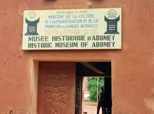
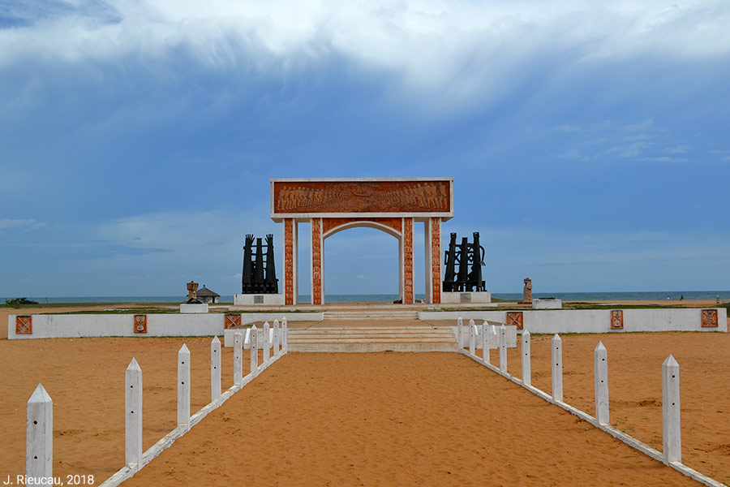
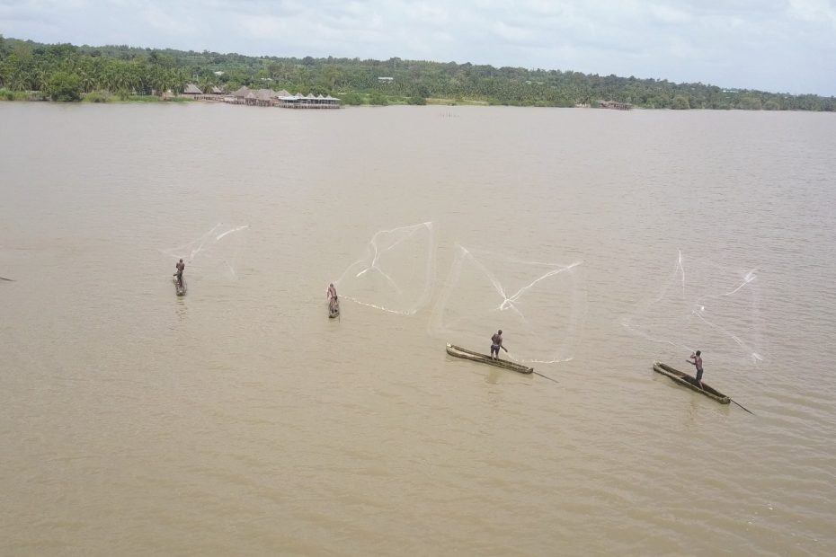

LE PAYS DE REVE
Découvrez nos destinations de rêve ! Notre Pays le BENIN👌👌
Destinations
-

Musée Historique d'ABOMEY-CALAVI
Le Musée Historique d'Abomey est un véritable trésor culturel situé au cœur des Palais Royaux d'Abomey, classés au patrimoine mondial de l'UNESCO depuis 1985. Ce musée retrace l'histoire du Royaume du Dahomey, avec des collections impressionnantes d'objets d'art, d'armes, de trônes royaux et d'objets rituels.
Les Salles du Musée
La Salle des Trônes : abrite des trônes royaux sculptés, dont celui du roi Ghézo, surmonté de crânes d'ennemie
- La Galerie des Amazones : dédiée aux guerrières légendaires du Dahomey, avec armes, costumes et récits de leurs exploits.- L'Espace Vodun : objets rituels, statues et autels liés au culte vodun, religion ancestrale toujours vivace
.- Collections
- Art royal : trônes sculptés, récades (sceptres royaux) et parasols cérémoniels.
- Bas-reliefs historiques : œuvres en terre cuite illustrant des batailles, des proverbes ou des animaux totémiques.
- Artéfacts militaires : armes traditionnelles, boucliers et tambours de guerre. Le musée est actuellement fermé pour rénovation et devrait rouvrir fin 2025
-

La PORTE DU NON RETOUR a Ouidah
Signification historique : Elle marque l'endroit où les captifs foulaient pour la dernière fois la terre de leurs ancêtres avant d'être embarqués dans des conditions inhumaines. Symbolisme et architecture : L'ancien arc de béton et bronze, conçu avec le sculpteur béninois Dominique Kouas, représentait la frise des déportés enchaînés. Une nouvelle version plus audacieuse, située près du pont de Djègbadji, est en cours d'installation pour moderniser le site.La Porte du Non-Retour à Ouidah, au Bénin, est un monument emblématique érigé en 1995 sur la plage par l'UNESCO, symbolisant le point de départ de millions d'esclaves vers les Amériques. Ce lieu de mémoire tragique, situé à la fin de la "Route des Esclaves", fait actuellement l'objet d'une réinvention avec une structure nouvelle et plus imposante, s'affirmant comme un haut lieu du tourisme mémoriel.
La Route de l'Esclave : Le monument est le point final d'un parcours mémoriel commençant au centre-ville de Ouidah, incluant des lieux comme la place aux enchères (Chacha).
Commémoration : La Fondation Djimon Hounsou organise des marathons et festivals pour inverser symboliquement cette route, célébrant la mémoire et la connexion avec la diaspora.Fondation pour la memoire de l'esclavage
Il est recommandé de visiter ce lieu chargé d'histoire avec un guide pour bien appréhender le parcours mémoriel, malgré des travaux récents qui ont modifié le site. Après trente années d'existence, de 1995 à 2025, l'ancienne Porte du Non-Retour s'efface pour céder la place à un édifice d'une... Porte du non-retour
-
.jpg)
Le TEMPLE DES PYTHONS "lieu sacré VODUN"
Le Temple des Pythons est un sanctuaire dédié au culte du serpent python, symbole de fertilité et de protection dans la culture béninoise.
Construit au XVIIIe siècle, il est lié à l'histoire du royaume de Dahomey et au culte de la déesse Aho. C"est un enclos en terre battue avec des arbres (dont des fromagers sacrés) et des bassins, entouré de murs bas. dont plusieurs dizaines de pythons royaux (non venimeux) vivent dans le temple, considérés comme des divinités (Dangbé). Ils sont souvent enroulés dans des paniers ou dans les arbres. Pour les rituels ils:
- Offrandes de nourriture (œufs, lait, fruits, parfois alcool) pour les pythons. - Prières pour la fertilité, la protection, la prospérité et la guérison. - Cérémonies vaudou avec chants, danses et percussions.
Les lieux de culte important pour les adeptes du vaudou béninois, lié au culte de la déesse Aho (mère des pythons)et selon la tradition, les pythons du temple sont les descendants des pythons sacrés du royaume de Dahomey. Une expérience unique et culturelle à OuidahPour la visite du site il est possible de visiter (avec un guide local), mais respecter les règles et la sacralité du lieu. Pas de photos à l'intérieur, pas de toucher aux pythons.
-
.jpg)
Le Mémorial du Grand Jubilé de l'an 2000.
Ce monument religieux et historique est un passage incontournable de la ville, marquant le contraste spirituel avec la Porte du Non-Retour située à proximité. Le mémorial célèbre les 140 ans de l'évangélisation du Bénin. Il marque l'arrivée (le 18 avril 1861) des deux premiers missionnaires catholiques de la Société des Missions Africaines (SMA), les pères Francesco Borghero et Francisco Fernandez. Le monument est érigé précisément sur la plage où ces missionnaires ont débarqué pour la première fois sur le sol béninois. Le monument se présente comme un immense mur de couleur ocre/terre cuite, rappelant les constructions traditionnelles. Au centre du mur, une grande ouverture est découpée selon la forme géographique du Bénin (anciennement Dahomey). À l'intérieur de cette silhouette du pays, une grande croix chrétienne se dresse, symbolisant l'ancrage de la foi au cœur de la nation. De part et d'autre de la croix, on observe des représentations artistiques de la population béninoise : À gauche et à droite, des hommes, des femmes et des enfants sont représentés en prière ou en célébration. Leurs mains sont levées vers le ciel ou vers un triangle lumineux (symbole de la Sainte-Trinité ou de l'œil de Dieu) situé en haut à droite du monument. Des textes gravés rappellent l'histoire de la mission, citant notamment les noms des pères fondateurs et des premières religieuses arrivées en 187 Contrairement à la Porte du Non-Retour (symbole de déportation), ce mémorial est souvent perçu comme une "Porte du Salut" ou du retour de la lumière spirituelle. Chaque année, de nombreux fidèles s'y rendent pour se recueillir, notamment lors des célébrations liées à l'histoire de l'Église catholique au Bénin. Sur les parties latérales du monument, les personnages représentés portent des vêtements traditionnels béninois (pagnes, bonnets). Cela symbolise l'inculturation, c'est-à-dire l'adoption de la foi chrétienne par la culture locale. Le Triangle Lumineux : En haut à droite, un triangle rayonnant représente la Sainte Trinité. Les rayons qui en descendent touchent les fidèles, symbolisant la grâce divine se répandant sur le peuple. Sur le monument, on peut lire des plaques commémoratives précises : 18 avril 1861 : Arrivée des pères Francesco Borghero et Francisco Fernandez. Août 1877 : Arrivée des premières religieuses de la congrégation de Notre-Dame des Apôtres. An 2000 : Date de l'érection du monument pour marquer le passage au nouveau millénaire et le grand jubilé de l'Église Matériaux : Le monument est construit en béton armé, recouvert d'un enduit de couleur ocre rouge, typique de la terre de barre du Sud-Bénin. Structure : Il s'élève sur une plateforme accessible par quelques marches, ce qui lui donne un aspect d'autel à ciel ouvert face à l'océan Atlantique. Il est important de noter que ces deux monuments se font face sur la plage de Ouidah : L'un (la Porte du Non-Retour) regarde vers la mer, symbolisant le départ forcé. L'autre (le Mémorial du Jubilé) regarde vers la terre, symbolisant l'arrivée d'une nouvelle espérance et le "retour" spirituel. Souhaitez-vous que je vous parle de Monseigneur Isidore de Souza, la figure religieuse majeure qui a marqué l'histoire du Bénin à cette époque ?
-
.jpg)
LE PARC NATIONAL DE LA PENDJARI
un joyau de la savane ouest-Africaine
Situé au nord-ouest du Bénin, le Parc National de la Pendjari est une réserve naturelle exceptionnelle, partie intégrante du complexe WOBP (W-Arly-Pendjari), classé au patrimoine mondial de l'UNESCO. Ce parc est l'un des plus beaux et des mieux préservés de l'Afrique de l'Ouest. Il offre une diversité de paysages, notamment des savanes herbeuses et boisées, des forêts claires, des collines et des falaises impressionnantes, ainsi que la vallée de la rivière Pendjari qui serpente à travers le parc. Une faune riche et variée, notamment :
- Des grands mammifères : éléphants, lions, léopards, buffles, hippopotames, antilopes... - Plus de 350 espèces d'oiseaux : pics, aigles, vautours, pintades, etc.
- Des reptiles et amphibiens : crocodiles, varans, serpents... La végétation est typique de la savane ouest-africaine, avec des arbres comme le baobab, le karité, le néré...
Cet milieu offre plusieurs activités pour les visiteurs : Safaris en 4x4 ou à pied avec des guides expérimentés. Observation de la faune et de la flore; Randonnées et trekking dans les paysages variés du parc; Campements et lodges pour passer la nuit dans un cadre naturel;
La saison sèche (novembre à mai) est la meilleure période pour visiter le parc, avec des conditions climatiques favorables et une concentration de la faune autour des points d'eau. Le parc est situé à environ 600 km de Cotonou, soit 4-5 heures de route mais les visites sont recommandées avec des guides touristiques. Le Parc National de la Pendjari est un must pour les amoureux de nature, de faune sauvage et de paysages spectaculaires.
-

LE LAC AHEME
.Le lac Ahémé est alimenté par les eaux paresseuses de la rivière Couffo, qui rejoignent au sud celles du fleuve Mono, pour former un vaste delta aux environs de la Bouche du Roy. Le lac couvre une superficie d'environ 78km². Les villages riverains abritent une population vivant de la pêche et de l'agriculture. Cet lac prend en compte les villes de Possotomè, Bopa, Tokpa-Domè, Agatogbo, Akodéha, Agbanto et de Dékanmè. Avec une Superficie de 78 km2 Coordonnées sur 6° 29′ 23″ N, 1° 56′ 26″E et une Largeur de 5 km Le lac Ahémé, situé au sud-ouest du Bénin, est un écosystème vital de 78 km² et 24 km de long, alimenté par le Couffo et relié à l'océan. Ce site Ramsar (1017) est une zone de pêche traditionnelle, d'écotourisme (Possotomé) et de culture vaudou, caractérisée par des mangroves, une biodiversité riche et des villages paisibles. Le lac est nourri au nord par les eaux douces de la rivière Couffo (dans la zone de Bopa). Au sud, il se connecte à l'Océan Atlantique via le chenal Aho. Il est bordé de marécages, de mangroves, de prairies inondées et de savanes boisées. Le lac fait partie d'un site protégé de 47 500 hectares, crucial pour la biodiversité Il abrite plus de 90 espèces de poissons, des tortues (dont la tortue imbriquée), et le lamantin d'Afrique. C'est un site d'importance pour les oiseaux migrateurs (environ 233 espèces d'oiseaux). La zone compte environ 364 espèces de plantes. Principale activité, elle emploie plus de 10 000 pêcheurs utilisant des méthodes traditionnelles, y compris l'acadja (parcs à poissons). Les berges sont cultivées (maïs, cultures maraîchères). Production de sel, de vin de palme et artisanat local. Le lac est imprégné de culture vaudou. Chaque village possède une divinité protectrice, et la forêt sacrée de Kpétou est un lieu de culte important. Célèbre village riverain, centre de l'écotourisme (géré par Eco-Bénin), proposant des balades en pirogue, la découverte des plantes médicinales et l'observation des singes. Le lac offre de petites plages calmes sous les cocotiers, idéales pour la baignade. La surexploitation des ressources halieutiques, la déforestation des mangroves et l'érosion côtière menacent l'écosystème. Des plans de gestion participative sont mis en place avec les communautés locales pour préserver ce site Ramsar. La visite de ce lieu donne l'envie de rester
À propos
Parce que voyager, c'est vivre deux fois, notre mission est de vous faire découvrir notre pays sur un angle authentique. Née d'une passion pour le patrimoine, notre plateforme a pour but de recenser les lieux merveilleuses de notre pays. Nous croyons que chaque monument, château ou ruelle pavée raconte une histoire unique qui mérite d'être partagée avec sincérité. Votre visite vous mettra vis a vis a des circuits thématiques (culturels, gastronomiques ou sportifs) adaptés à votre rythme, des guides pratiques pour éviter les pièges et découvrir les sites les plus appréciés, du Louvre à la Tour Eiffel. Nous mettons en avant les initiatives locales pour un tourisme qui respecte l'environnement et les habitant. L’honnêteté est au cœur de notre démarche. Chaque recommandation est testée et validée par notre équipe pour vous garantir une expérience sans encombre.